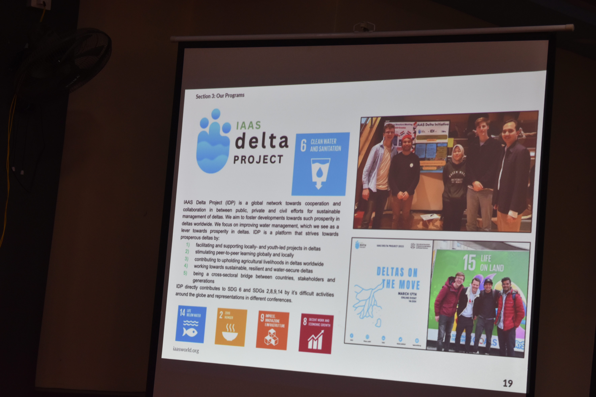

Symposium Highlights

Sujan Chapgain representing IAAS Nepal as speakers on youth and food security

IAAS Delta Project & Youth Engagement Activities

Interactive workshop on sustainable agriculture practices

Delegates with Symposium Certificates

Permaculture spider web, HASERA Permaculture learning center

Panel discussion on climate-smart agriculture

Networking and collaborative projects among youth delegates